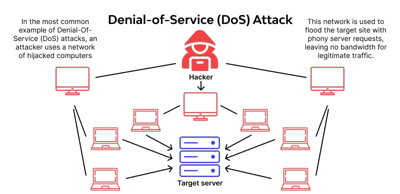
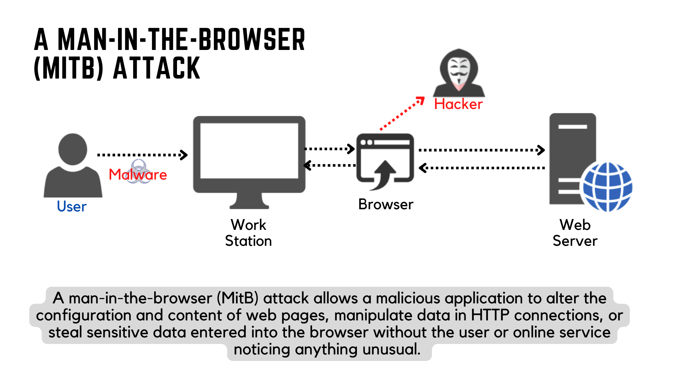

| SQL Injection
Source: https://spanning.com/blog/sql-injection-attacks-web-based-application-security-part-4/
|
SQL Injection is a type of attack that allows an attacker to execute arbitrary SQL code on a database. It is commonly used to bypass authentication, retrieve data, or manipulate database records. This type of attack can be mitigated by using prepared statements and parameterized queries.
https://owasp.org/www-community/attacks/SQL_Injection
|
| Cross-Site Scripting (XSS)
Source: https://spanning.com/blog/cross-site-scripting-web-based-application-security-part-3/
|
XSS allows attackers to inject malicious scripts into web pages viewed by other users. These scripts can steal cookies, session tokens, or other sensitive information. There are different types of XSS, including stored, reflected, and DOM-based.
https://owasp.org/www-community/attacks/xss
|
Cross-Site Request Forgery (CSRF)
 Source: https://www.imperva.com/learn/application-security/csrf-cross-site-request-forgery/
Source: https://www.imperva.com/learn/application-security/csrf-cross-site-request-forgery/
|
CSRF attacks trick users into performing actions they did not intend to on a web application where they are authenticated. It can lead to unauthorized actions such as changing account settings or making transactions. CSRF tokens and same-site cookies can help prevent these attacks.
https://owasp.org/www-community/attacks/csrf
|
| Clickjacking
Source: https://www.keepersecurity.com/blog/2023/07/24/what-is-clickjacking/
|
Clickjacking is an attack where an attacker tricks a user into clicking on something different from what the user perceives. This can lead to unwanted actions being taken on a web page. Techniques to prevent clickjacking include using X-Frame-Options and frame-busting scripts.
https://owasp.org/www-community/attacks/Clickjacking
|
| Denial of Service

Source: https://www.wallarm.com/what/dos-denial-of-service-attack
|
The Denial of Service (DoS) attack is focused on making a resource (site, application, server) unavailable for the purpose it was designed. There are many ways to make a service unavailable for legitimate users by manipulating network packets, programming, logical, or resources handling vulnerabilities, among others. If a service receives a very large number of requests, it may cease to be available to legitimate users. In the same way, a service may stop if a programming vulnerability is exploited, or the way the service handles resources it uses.
https://owasp.org/www-community/attacks/Denial_of_Service
|
| Command Injection
Source: https://www.hackingarticles.in/comprehensive-guide-on-os-command-injection/
|
Command injection attacks occur when an attacker is able to execute arbitrary commands on a server. This is often possible due to improper handling of user input. Input validation and proper escaping can help prevent command injection vulnerabilities.
https://owasp.org/www-community/attacks/Command_Injection
|
| Directory Traversal
Source: https://securityboulevard.com/2024/02/directory-traversal-examples-testing-and-prevention/
|
Directory traversal attacks allow attackers to access files and directories stored outside the web root directory. This can lead to information disclosure or unauthorized access to sensitive files. Input sanitization and proper access controls are key to preventing these attacks.
https://owasp.org/www-community/attacks/Path_Traversal
|
Broken Access Control
 Source: https://cloudkul.com/blog/what-is-broken-authentication-broken-access-control/
Source: https://cloudkul.com/blog/what-is-broken-authentication-broken-access-control/
|
Access control, sometimes called authorization, is how a web application grants access to content and functions to some users and not others. These checks are performed after authentication, and govern what ‘authorized’ users are allowed to do. Access control sounds like a simple problem but is insidiously difficult to implement correctly. A web application’s access control model is closely tied to the content and functions that the site provides. In addition, the users may fall into a number of groups or roles with different abilities or privileges.
https://owasp.org/www-community/Broken_Access_Control
|
Password Spraying Attack
 Source: https://owasp.org/www-community/attacks/Password_Spraying_Attack
Source: https://owasp.org/www-community/attacks/Password_Spraying_Attack
|
Password spraying is a type of brute force attack. In this attack, an attacker will brute force logins based on list of usernames with default passwords on the application. For example, an attacker will use one password (say, Secure@123) against many different accounts on the application to avoid account lockouts that would normally occur when brute forcing a single account with many passwords. This attack can be found commonly where the application or admin sets a default password for the new users.
https://owasp.org/www-community/attacks/Password_Spraying_Attack
|
| Man in the browser attack

Source: https://www.zenarmor.com/docs/network-security-tutorials/what-is-man-in-the-browser-attack
|
The most common objective of this attack is to cause financial fraud by manipulating transactions of Internet Banking systems, even when other authentication factors are in use.
A previously installed Trojan horse is used to act between the browser and the browser’s security mechanism, sniffing or modifying transactions as they are formed on the browser, but still displaying back the user’s intended transaction.
Normally, the victim must be smart in order to notice a signal of such attack while they are accessing a web application like an internet banking account, even in presence of SSL channels, because all expected controls and security mechanisms are displayed and work normally.
https://owasp.org/www-community/attacks/Man-in-the-browser_attack
|